خدمات منصة بلدي
إصدار وتعديل رخص البناء، القرارات المساحية، شهادات الإشغال وجميع المعاملات البلدية.
- إصدار وتجديد رخص البناء
- تعديل وإلغاء وإيقاف الرخص
- شهادات الإشغال والتقارير الفنية
- قرارات ومسائل ومعاملات بلدية
حلول هندسية واستشارية متكاملة للمشاريع في المملكة العربية السعودية، من التراخيص والتصميم إلى الرفع المساحي والسلامة والإشراف الهندسي.
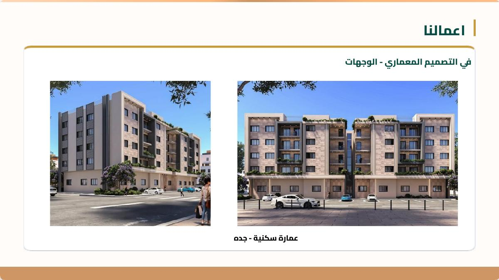
شركة آثار الصور للاستشارات الهندسية جهة متخصصة ومعتمدة في تقديم حلول السلامة الهندسية والخدمات الاستشارية للمشاريع وفق المعايير المعتمدة بالمملكة العربية السعودية.
يضم فريقنا مهندسين وفنيين في مجالات السلامة والدفاع المدني والمسح الهندسي، مع الالتزام باللوائح الفنية والتنظيمية وسرعة التفاعل والشفافية.
تحدث مع فريقنا ←أن نكون خيارًا موثوقًا في الاستشارات الهندسية وخدمات السلامة من خلال الابتكار والدقة والامتثال.
تقديم حلول متكاملة تدعم جودة المشاريع وتحقق متطلباتها النظامية.
بناء علاقات طويلة الأمد ومواكبة التطور العمراني وتقديم خدمات متطورة.
خدمات عملية تغطي مراحل المشروع من الرخص والتصميم إلى المسح والسلامة والإشراف.
إصدار وتعديل رخص البناء، القرارات المساحية، شهادات الإشغال وجميع المعاملات البلدية.
حلول تبدأ من المخططات المعمارية والإنشائية وصولًا إلى الإشراف على التنفيذ.
مسح هندسي ميداني باستخدام أحدث أجهزة المساحة لدعم التصميم واتخاذ القرار.
تصميم أنظمة السلامة والوقاية من الحريق وفق اشتراطات الدفاع المدني وكود البناء.
تصاميم فلل ومبانٍ تجمع بين الفخامة والراحة والحلول الذكية والنمذجة ثلاثية الأبعاد.
إعداد المخططات التقسيمية ومراعاة التخطيط العمراني والبنية التحتية ومداخل القطع.
إعداد الحلول والمخططات الإنشائية للمباني والمشاريع حسب متطلبات المشروع.
متابعة مراحل البناء من الحفر والأساسات والعظم وحتى التشطيبات والكهرباء والسباكة.
فهم احتياج المشروع والمتطلبات.
جمع البيانات والمخططات والرفع عند الحاجة.
إعداد الملفات ومتابعة الإجراءات ذات العلاقة.
تواصل مستمر ودعم حتى اكتمال الخدمة.
نماذج مختارة من الملف التعريفي للشركة.
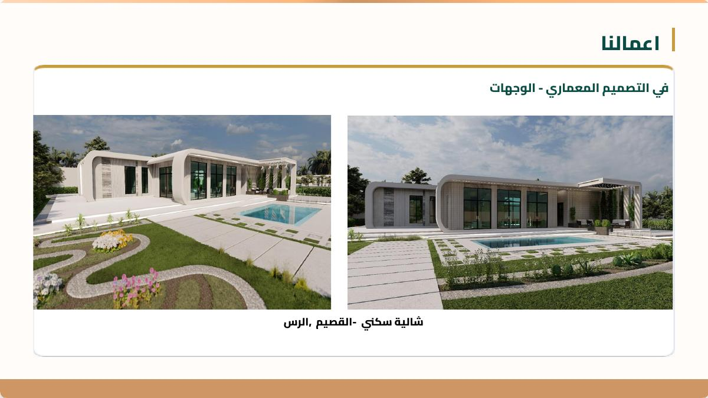
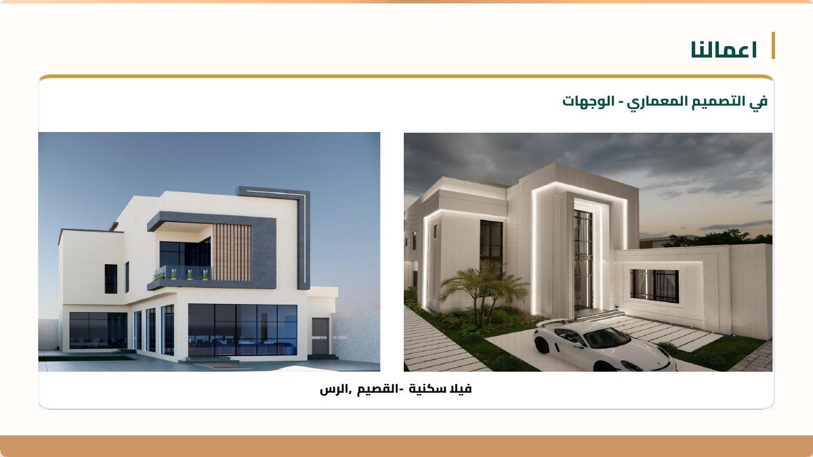
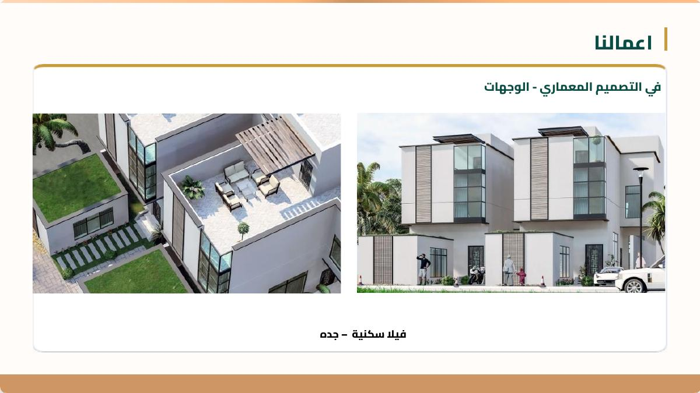
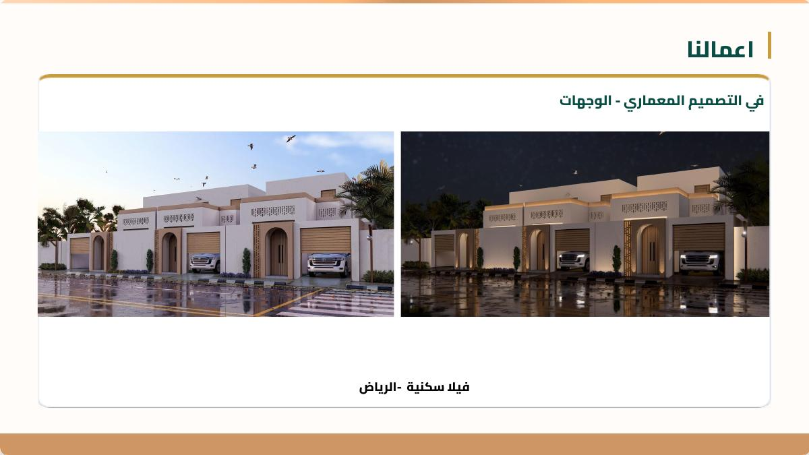
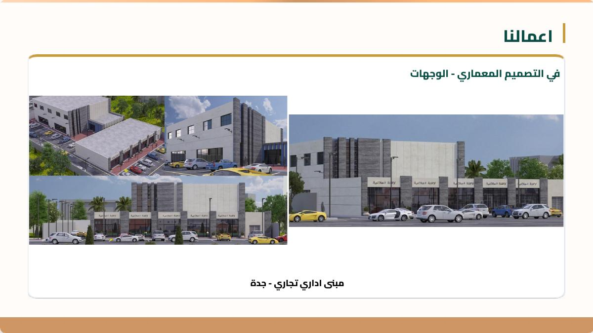
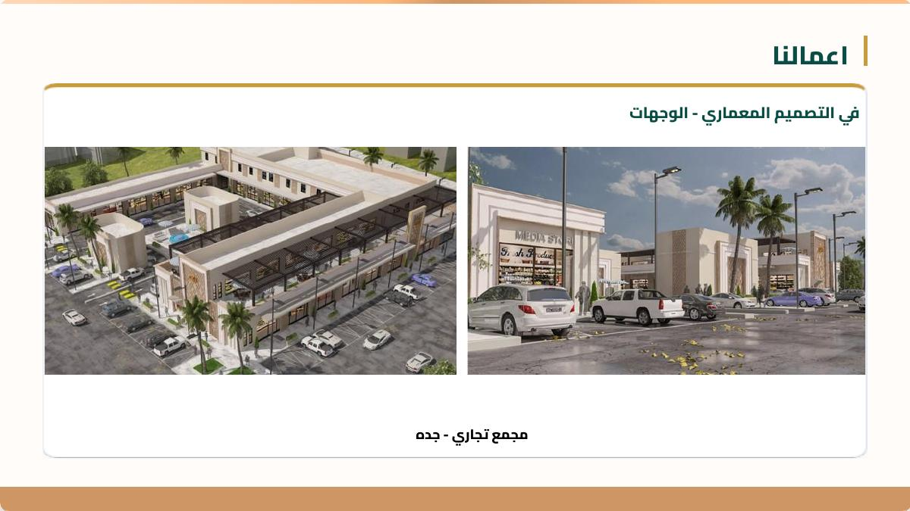
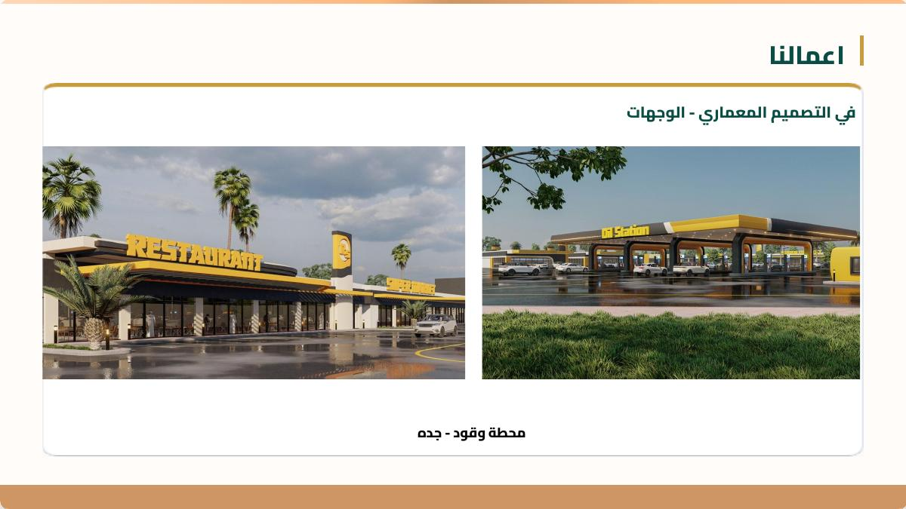
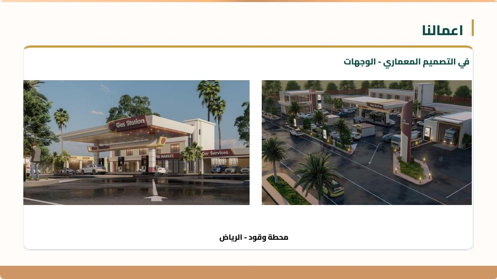
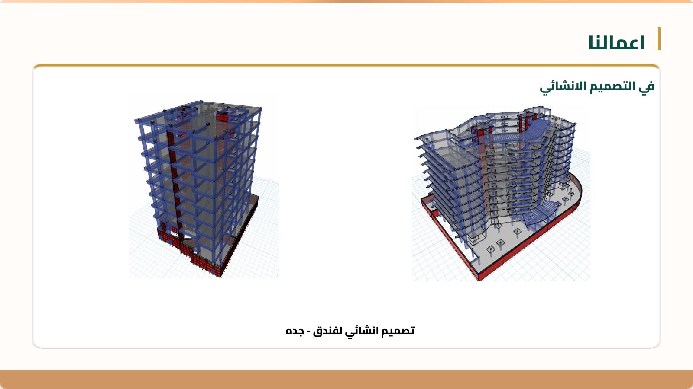
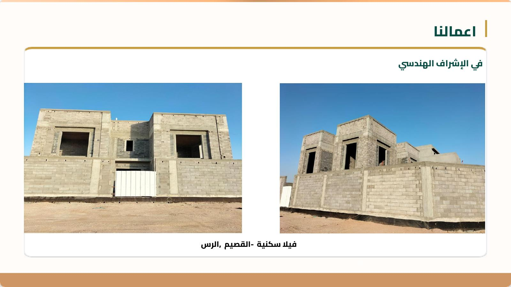
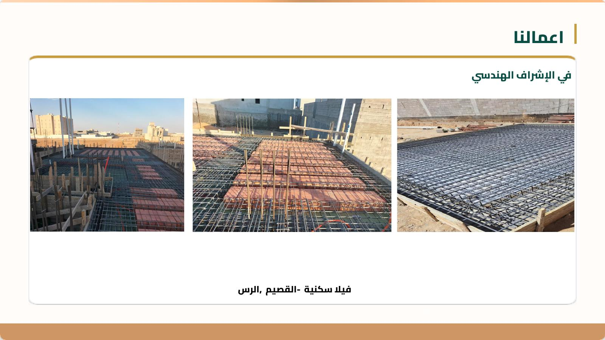
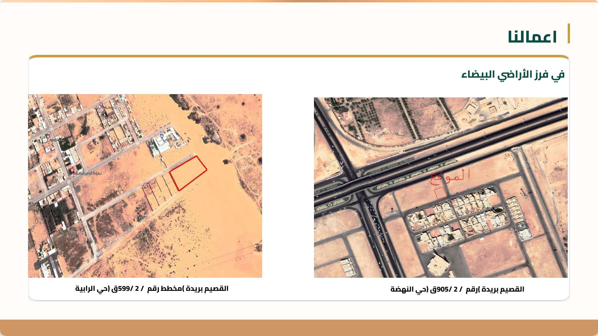
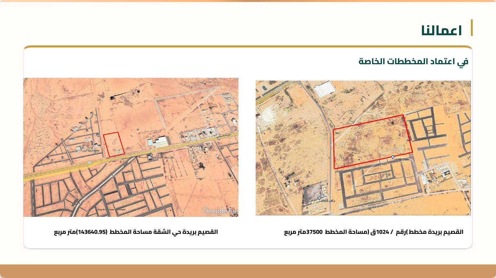
نعمل على تطوير نظام جودة وأمان يواكب التحديثات المستمرة ويتماشى مع متطلبات العملاء والأنشطة الهندسية.
للاستفسار عن الخدمات أو طلب استشارة، تواصل معنا مباشرة.